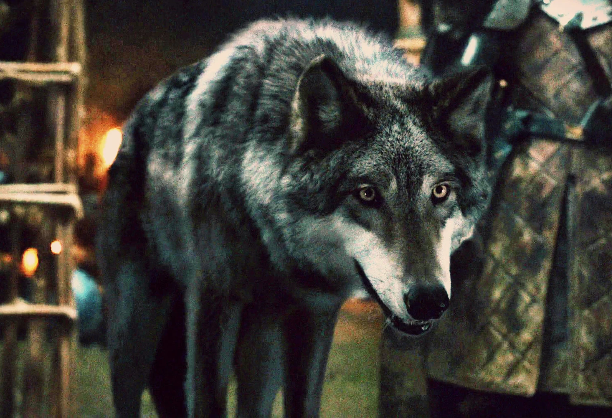
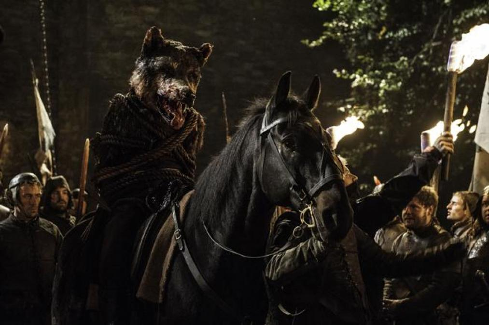

1ª TEMPORADA
Vento Cinzento foi adotado pelos Stark quando Eddard Stark e sua comitiva acharam seus irmãos e sua mãe falecida. A pedido de Jon Snow, os lobos foram poupados e cada criança Stark adotou um. Robb nomeia seu lobo como Vento Cinzento. Quando Tyrion Lannister vai até Robb Stark em Winterfell para apresentar planos para uma sela personalizada que permitirá que Bran Stark ande de cavalo, Vento Cinzento está sob a mesa nos pés de Robb assistindo o visitante atentamente. Lorde Grande Jon Umber desembainha sua espada quando Robb se recusa a dar-lhe o comando da vanguarda do exército. Vento Cinzento salta sobre a mesa. Ele sobe em Umber e morda dois de seus dedos. Lord Leo Lefford relata que, durante a Batalha do Sussurro, Vento Cinzento matou uma dúzia de homens e cavalos.
2ª TEMPORADA
Quando Robb se aproxima de seu refém Jaime Lannister no acampamento, Vento Cinzento emerge lentamente. Vento Cinzento cresceu e fica protegido ao lado de Robb, que acaricia suas costas. Depois que Robb sai, Vento Cinzento vai até mais perto de Jaime antes de partir para se juntar ao seu mestre. Vento Cinzento desempenha um papel decisivo na Batalha de Oxcross. O lobo aparece no acampamento dos Lannisters e assusta seus cavalos, além de matar vários sentinelas. Sem os seus cavalos, o exército Lannister é facilmente abatido enquanto eles são despertados pelo sono pela cavalaria Stark. Tal impressão é feita nas forças Lannister que aterrorizaram os rumores espalhados em Porto Real de que Robb atacou o campo de Lannister usando todo um exército de lobos. Vento Cinzento viaja junto com o Robb enquanto ele se move de Harrenhal para Correrrio. Lá, ele está presente durante a execução de Rickard Karstark. 
3ª TEMPORADA
Vento Cinzento acompanha Robb as Gêmeas para o casamento de Edmure Tully e Roslin Frey, embora ele tenha sido colocado dentro de um canil. Vento Cinzento fica inquieto, tendo percebido a iminente traição dos membros da Casa Frey. Quando os homens de Frey e Bolton matam os Starks, Vento Cinzento é atingido várias vezes pelos besteiros dos Frey antes que Arya Stark possa liberta-lo. Ele sucumbe às suas feridas logo depois de fazer contato visual com Arya. Mais tarde, enquanto os homens Frey e Bolton continuam massacrando o exército do Norte, Vento Cinzento e Robb são decapitados, com a cabeça de Vento Cinzento costurada no corpo sem cabeça de Robb e desfilaram em cima de um cavalo ao redor das Gêmeas como último ato de zombaria e profanação.
